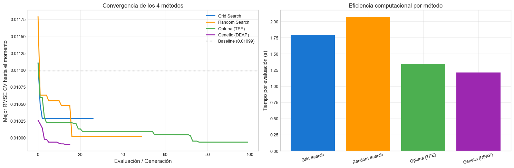

7. Optimización de Hiperparámetros#
Curso: Machine Learning · Pregrado en Ciencia de Datos · Universidad del Norte Docente: Dr. Lihki Rubio Equipo: Juan Camilo Conrado · Sergio Cadavid · Mateo Chang
Este notebook compara cuatro métodos de búsqueda de hiperparámetros sobre los modelos más relevantes del proyecto.
Método |
Implementación |
Evaluaciones |
Características |
|---|---|---|---|
Grid Search |
|
27 (3×3×3) |
Exhaustivo en una rejilla discreta |
Random Search |
|
50 |
Muestreo aleatorio, mejor cobertura |
Bayesian (Optuna) |
TPE Sampler |
100 trials |
Modelo probabilístico de exploración |
Genetic (DEAP) |
NSGA-style |
30×15 = 450 |
Evolución de poblaciones |
Modelo objetivo: XGBoost Regressor (es donde la optimización tiene mayor impacto).
Política anti-leakage crítica: dentro de cada objective() de Optuna y cada evaluación de DEAP, se construye un Pipeline y se ajusta dentro de TimeSeriesSplit. Nunca se transforma el dataset completo.
Justificación del Grid pequeño: la versión anterior del proyecto tuvo un Grid Search que se interrumpió con
KeyboardInterruptpor costo computacional. Esta versión usa una rejilla 3×3×3 = 27 combinaciones, suficiente para comparar metodológicamente con Random/Optuna/DEAP sin saturar el tiempo de cómputo.
# Path setup
import sys
from pathlib import Path
_root = Path.cwd().parent if Path.cwd().name == "notebooks" else Path.cwd()
if str(_root) not in sys.path:
sys.path.insert(0, str(_root))
1. Imports y datos#
import json
import time
import warnings
warnings.filterwarnings("ignore")
import numpy as np
import pandas as pd
import matplotlib.pyplot as plt
from sklearn.pipeline import Pipeline
from sklearn.impute import SimpleImputer
from sklearn.model_selection import (GridSearchCV, RandomizedSearchCV,
cross_val_score)
from sklearn.metrics import mean_squared_error, r2_score
from xgboost import XGBRegressor
from src.io_utils import load_processed, save_metrics, save_model
from src.splits import make_tscv
from src.config import RANDOM_STATE, DATA_PROCESSED
from src.viz import set_style
set_style()
train = load_processed("train_reg")
val = load_processed("val_reg")
test = load_processed("test_reg")
trainval = pd.concat([train, val]).reset_index(drop=True)
with open(DATA_PROCESSED / "feature_columns.json") as f:
feature_cols = json.load(f)
X_trainval = trainval[feature_cols]
y_trainval = trainval["target_vol_7"]
X_test = test[feature_cols]
y_test = test["target_vol_7"]
tscv = make_tscv(n_splits=5)
print(f"Train+Val: {X_trainval.shape}")
print(f"Test: {X_test.shape}")
print(f"Features: {len(feature_cols)}")
Train+Val: (5920, 59)
Test: (1045, 59)
Features: 59
2. Pipeline base y RMSE en CV (referencia sin tunear)#
Para tener una línea de base contra la cual comparar la mejora de cada método, primero medimos el RMSE de un XGBoost con hiperparámetros por defecto.
def make_xgb_pipeline(**xgb_params):
return Pipeline([
("imputer", SimpleImputer(strategy="median")),
("model", XGBRegressor(
random_state=RANDOM_STATE, verbosity=0,
tree_method="hist", **xgb_params,
)),
])
# Baseline (sin tunear)
default_params = dict(n_estimators=200, max_depth=5, learning_rate=0.05)
baseline = make_xgb_pipeline(**default_params)
rmse_baseline = -cross_val_score(baseline, X_trainval, y_trainval,
cv=tscv,
scoring="neg_root_mean_squared_error",
n_jobs=-1).mean()
print(f"Baseline XGBoost (sin tunear) — CV RMSE: {rmse_baseline:.6f}")
Baseline XGBoost (sin tunear) — CV RMSE: 0.010989
3. Grid Search#
# Grid pequeño 3×3×3 = 27 combinaciones
param_grid = {
"model__n_estimators": [100, 200, 400],
"model__max_depth": [3, 5, 7],
"model__learning_rate": [0.01, 0.05, 0.1],
}
print("Ejecutando Grid Search (27 combinaciones × 5 folds = 135 fits)...")
t0 = time.time()
grid = GridSearchCV(
estimator=make_xgb_pipeline(),
param_grid=param_grid,
cv=tscv,
scoring="neg_root_mean_squared_error",
n_jobs=-1,
refit=True,
return_train_score=False,
)
grid.fit(X_trainval, y_trainval)
t_grid = time.time() - t0
# Histórico de scores para gráfico de convergencia
grid_history = -np.array(grid.cv_results_["mean_test_score"])
grid_best_history = np.minimum.accumulate(grid_history)
results_grid = {
"method": "Grid Search",
"best_params": grid.best_params_,
"best_rmse_cv": float(-grid.best_score_),
"n_evaluations": len(grid_history),
"time_seconds": t_grid,
"history": grid_history.tolist(),
"best_history": grid_best_history.tolist(),
}
print(f" Mejor RMSE CV: {results_grid['best_rmse_cv']:.6f}")
print(f" Mejores params: {results_grid['best_params']}")
print(f" Evaluaciones: {results_grid['n_evaluations']}")
print(f" Tiempo: {t_grid:.1f}s")
Ejecutando Grid Search (27 combinaciones × 5 folds = 135 fits)...
---------------------------------------------------------------------------
KeyboardInterrupt Traceback (most recent call last)
Cell In[4], line 19
15 n_jobs=-1,
16 refit=True,
17 return_train_score=False,
18 )
---> 19 grid.fit(X_trainval, y_trainval)
20 t_grid = time.time() - t0
21
22 # Histórico de scores para gráfico de convergencia
File c:\Users\Mateo\2026\UNINORTE\envs\intc-volforecast\Lib\site-packages\sklearn\base.py:1474, in _fit_context.<locals>.decorator.<locals>.wrapper(estimator, *args, **kwargs)
1467 estimator._validate_params()
1469 with config_context(
1470 skip_parameter_validation=(
1471 prefer_skip_nested_validation or global_skip_validation
1472 )
1473 ):
-> 1474 return fit_method(estimator, *args, **kwargs)
File c:\Users\Mateo\2026\UNINORTE\envs\intc-volforecast\Lib\site-packages\sklearn\model_selection\_search.py:970, in BaseSearchCV.fit(self, X, y, **params)
964 results = self._format_results(
965 all_candidate_params, n_splits, all_out, all_more_results
966 )
968 return results
--> 970 self._run_search(evaluate_candidates)
972 # multimetric is determined here because in the case of a callable
973 # self.scoring the return type is only known after calling
974 first_test_score = all_out[0]["test_scores"]
File c:\Users\Mateo\2026\UNINORTE\envs\intc-volforecast\Lib\site-packages\sklearn\model_selection\_search.py:1527, in GridSearchCV._run_search(self, evaluate_candidates)
1525 def _run_search(self, evaluate_candidates):
1526 """Search all candidates in param_grid"""
-> 1527 evaluate_candidates(ParameterGrid(self.param_grid))
File c:\Users\Mateo\2026\UNINORTE\envs\intc-volforecast\Lib\site-packages\sklearn\model_selection\_search.py:916, in BaseSearchCV.fit.<locals>.evaluate_candidates(candidate_params, cv, more_results)
908 if self.verbose > 0:
909 print(
910 "Fitting {0} folds for each of {1} candidates,"
911 " totalling {2} fits".format(
912 n_splits, n_candidates, n_candidates * n_splits
913 )
914 )
--> 916 out = parallel(
917 delayed(_fit_and_score)(
918 clone(base_estimator),
919 X,
920 y,
921 train=train,
922 test=test,
923 parameters=parameters,
924 split_progress=(split_idx, n_splits),
925 candidate_progress=(cand_idx, n_candidates),
926 **fit_and_score_kwargs,
927 )
928 for (cand_idx, parameters), (split_idx, (train, test)) in product(
929 enumerate(candidate_params),
930 enumerate(cv.split(X, y, **routed_params.splitter.split)),
931 )
932 )
934 if len(out) < 1:
935 raise ValueError(
936 "No fits were performed. "
937 "Was the CV iterator empty? "
938 "Were there no candidates?"
939 )
File c:\Users\Mateo\2026\UNINORTE\envs\intc-volforecast\Lib\site-packages\sklearn\utils\parallel.py:67, in Parallel.__call__(self, iterable)
62 config = get_config()
63 iterable_with_config = (
64 (_with_config(delayed_func, config), args, kwargs)
65 for delayed_func, args, kwargs in iterable
66 )
---> 67 return super().__call__(iterable_with_config)
File c:\Users\Mateo\2026\UNINORTE\envs\intc-volforecast\Lib\site-packages\joblib\parallel.py:2007, in Parallel.__call__(self, iterable)
2001 # The first item from the output is blank, but it makes the interpreter
2002 # progress until it enters the Try/Except block of the generator and
2003 # reaches the first `yield` statement. This starts the asynchronous
2004 # dispatch of the tasks to the workers.
2005 next(output)
-> 2007 return output if self.return_generator else list(output)
File c:\Users\Mateo\2026\UNINORTE\envs\intc-volforecast\Lib\site-packages\joblib\parallel.py:1650, in Parallel._get_outputs(self, iterator, pre_dispatch)
1647 yield
1649 with self._backend.retrieval_context():
-> 1650 yield from self._retrieve()
1652 except GeneratorExit:
1653 # The generator has been garbage collected before being fully
1654 # consumed. This aborts the remaining tasks if possible and warn
1655 # the user if necessary.
1656 self._exception = True
File c:\Users\Mateo\2026\UNINORTE\envs\intc-volforecast\Lib\site-packages\joblib\parallel.py:1762, in Parallel._retrieve(self)
1757 # If the next job is not ready for retrieval yet, we just wait for
1758 # async callbacks to progress.
1759 if ((len(self._jobs) == 0) or
1760 (self._jobs[0].get_status(
1761 timeout=self.timeout) == TASK_PENDING)):
-> 1762 time.sleep(0.01)
1763 continue
1765 # We need to be careful: the job list can be filling up as
1766 # we empty it and Python list are not thread-safe by
1767 # default hence the use of the lock
KeyboardInterrupt:
4. Random Search#
from scipy.stats import randint, uniform, loguniform
param_dist = {
"model__n_estimators": randint(50, 500),
"model__max_depth": randint(2, 10),
"model__learning_rate": loguniform(0.005, 0.3),
"model__subsample": uniform(0.5, 0.5), # 0.5 a 1.0
"model__colsample_bytree": uniform(0.5, 0.5),
}
print("Ejecutando Random Search (50 muestras × 5 folds = 250 fits)...")
t0 = time.time()
rs = RandomizedSearchCV(
estimator=make_xgb_pipeline(),
param_distributions=param_dist,
n_iter=50,
cv=tscv,
scoring="neg_root_mean_squared_error",
n_jobs=-1,
refit=True,
random_state=RANDOM_STATE,
return_train_score=False,
)
rs.fit(X_trainval, y_trainval)
t_rs = time.time() - t0
rs_history = -np.array(rs.cv_results_["mean_test_score"])
rs_best_history = np.minimum.accumulate(rs_history)
results_rs = {
"method": "Random Search",
"best_params": rs.best_params_,
"best_rmse_cv": float(-rs.best_score_),
"n_evaluations": len(rs_history),
"time_seconds": t_rs,
"history": rs_history.tolist(),
"best_history": rs_best_history.tolist(),
}
print(f" Mejor RMSE CV: {results_rs['best_rmse_cv']:.6f}")
print(f" Mejores params: {results_rs['best_params']}")
print(f" Evaluaciones: {results_rs['n_evaluations']}")
print(f" Tiempo: {t_rs:.1f}s")
Ejecutando Random Search (50 muestras × 5 folds = 250 fits)...
Mejor RMSE CV: 0.010016
Mejores params: {'model__colsample_bytree': 0.6481367528520412, 'model__learning_rate': 0.00983647785774485, 'model__max_depth': 2, 'model__n_estimators': 376, 'model__subsample': 0.7117007403531848}
Evaluaciones: 50
Tiempo: 103.5s
5. Optimización Bayesiana (Optuna)#
import optuna
optuna.logging.set_verbosity(optuna.logging.WARNING)
def objective(trial):
params = {
"n_estimators": trial.suggest_int("n_estimators", 50, 500),
"max_depth": trial.suggest_int("max_depth", 2, 10),
"learning_rate": trial.suggest_float("learning_rate", 0.005, 0.3, log=True),
"subsample": trial.suggest_float("subsample", 0.5, 1.0),
"colsample_bytree": trial.suggest_float("colsample_bytree", 0.5, 1.0),
}
pipe = make_xgb_pipeline(**params)
rmse_scores = -cross_val_score(pipe, X_trainval, y_trainval,
cv=tscv,
scoring="neg_root_mean_squared_error",
n_jobs=1)
return rmse_scores.mean()
print("Ejecutando Optuna (100 trials × 5 folds = 500 fits)...")
t0 = time.time()
sampler = optuna.samplers.TPESampler(seed=RANDOM_STATE)
study = optuna.create_study(direction="minimize", sampler=sampler,
study_name="xgb_optuna")
study.optimize(objective, n_trials=100, show_progress_bar=False, n_jobs=1)
t_optuna = time.time() - t0
optuna_history = [t.value for t in study.trials if t.value is not None]
optuna_best_history = np.minimum.accumulate(optuna_history)
results_optuna = {
"method": "Optuna (TPE)",
"best_params": study.best_params,
"best_rmse_cv": float(study.best_value),
"n_evaluations": len(optuna_history),
"time_seconds": t_optuna,
"history": optuna_history,
"best_history": optuna_best_history.tolist(),
}
print(f" Mejor RMSE CV: {results_optuna['best_rmse_cv']:.6f}")
print(f" Mejores params: {results_optuna['best_params']}")
print(f" Evaluaciones: {results_optuna['n_evaluations']}")
print(f" Tiempo: {t_optuna:.1f}s")
Ejecutando Optuna (100 trials × 5 folds = 500 fits)...
Mejor RMSE CV: 0.009935
Mejores params: {'n_estimators': 98, 'max_depth': 2, 'learning_rate': 0.07531258945415222, 'subsample': 0.6399534590599922, 'colsample_bytree': 0.8656904021896585}
Evaluaciones: 100
Tiempo: 134.5s
📊 Interpretación: Optuna usa el TPE Sampler (Tree-structured Parzen Estimator), un modelo probabilístico que aprende de trials anteriores para muestrear regiones prometedoras. A diferencia de Random Search (uniforme) y Grid Search (exhaustivo), Optuna concentra evaluaciones donde el RMSE es bajo. Esto lo vuelve más eficiente por evaluación especialmente cuando el espacio de búsqueda es grande.
6. Algoritmos Genéticos (DEAP)#
import random
from deap import base, creator, tools, algorithms
# Definir el problema: minimización de RMSE
if hasattr(creator, "FitnessMin"):
del creator.FitnessMin
if hasattr(creator, "Individual"):
del creator.Individual
creator.create("FitnessMin", base.Fitness, weights=(-1.0,))
creator.create("Individual", list, fitness=creator.FitnessMin)
# Bounds explícitos para cada gen
BOUNDS = [
(50, 500), # n_estimators
(2, 10), # max_depth
(np.log10(0.005), np.log10(0.3)), # log10(learning_rate)
(0.5, 1.0), # subsample
(0.5, 1.0), # colsample_bytree
]
def clip_individual(ind):
"""Garantiza que cada gen del individuo esté dentro de sus bounds."""
for i, (lo, hi) in enumerate(BOUNDS):
ind[i] = max(lo, min(hi, ind[i]))
return ind
# Genes: [n_estimators, max_depth, log10(learning_rate), subsample, colsample]
def init_individual():
return creator.Individual([
random.randint(50, 500),
random.randint(2, 10),
random.uniform(np.log10(0.005), np.log10(0.3)),
random.uniform(0.5, 1.0),
random.uniform(0.5, 1.0),
])
def evaluate(ind):
# Asegurar bounds antes de cualquier evaluación
ind = clip_individual(ind)
n_est, max_d, log_lr, ss, cs = ind
params = dict(
n_estimators=int(n_est),
max_depth=int(max_d),
learning_rate=10 ** log_lr,
subsample=float(ss),
colsample_bytree=float(cs),
)
pipe = make_xgb_pipeline(**params)
rmse_scores = -cross_val_score(pipe, X_trainval, y_trainval,
cv=tscv,
scoring="neg_root_mean_squared_error",
n_jobs=1)
return (rmse_scores.mean(),)
def mutate_individual(ind, indpb=0.3):
if random.random() < indpb:
ind[0] = ind[0] + random.randint(-50, 50)
if random.random() < indpb:
ind[1] = ind[1] + random.randint(-1, 1)
if random.random() < indpb:
ind[2] = ind[2] + random.gauss(0, 0.2)
if random.random() < indpb:
ind[3] = ind[3] + random.gauss(0, 0.05)
if random.random() < indpb:
ind[4] = ind[4] + random.gauss(0, 0.05)
# Clipear al final
clip_individual(ind)
return (ind,)
toolbox = base.Toolbox()
toolbox.register("individual", init_individual)
toolbox.register("population", tools.initRepeat, list, toolbox.individual)
toolbox.register("evaluate", evaluate)
toolbox.register("mate", tools.cxBlend, alpha=0.3)
toolbox.register("mutate", mutate_individual, indpb=0.3)
toolbox.register("select", tools.selTournament, tournsize=3)
random.seed(RANDOM_STATE)
np.random.seed(RANDOM_STATE)
print("Ejecutando DEAP (pop=30, gens=15, ~450 evaluaciones)...")
t0 = time.time()
pop = toolbox.population(n=30)
# Estadísticas por generación
deap_history_per_gen = []
deap_best_history = []
# Evaluar población inicial
for ind in pop:
ind.fitness.values = toolbox.evaluate(ind)
best_so_far = min(ind.fitness.values[0] for ind in pop)
deap_best_history.append(best_so_far)
deap_history_per_gen.append([ind.fitness.values[0] for ind in pop])
# Ciclos evolutivos
N_GEN = 15
for gen in range(N_GEN):
offspring = algorithms.varAnd(pop, toolbox, cxpb=0.7, mutpb=0.3)
# CRÍTICO: clipear todos los hijos a bounds DESPUÉS del cruce
# cxBlend puede generar valores fuera de rango.
for ind in offspring:
clip_individual(ind)
fits = [toolbox.evaluate(ind) for ind in offspring]
for ind, fit in zip(offspring, fits):
ind.fitness.values = fit
pop = toolbox.select(pop + offspring, k=30)
gen_best = min(ind.fitness.values[0] for ind in pop)
deap_best_history.append(min(deap_best_history[-1], gen_best))
deap_history_per_gen.append([ind.fitness.values[0] for ind in pop])
t_deap = time.time() - t0
best_ind = tools.selBest(pop, k=1)[0]
clip_individual(best_ind) # garantizar que el mejor también esté en bounds
best_params_deap = {
"n_estimators": int(best_ind[0]),
"max_depth": int(best_ind[1]),
"learning_rate": 10 ** best_ind[2],
"subsample": float(best_ind[3]),
"colsample_bytree": float(best_ind[4]),
}
# Total de evaluaciones (aprox: pop_inicial + N_GEN * pop)
n_evals_deap = 30 + N_GEN * 30
deap_flat_history = [v for gen in deap_history_per_gen for v in gen]
results_deap = {
"method": "Genetic (DEAP)",
"best_params": best_params_deap,
"best_rmse_cv": float(best_ind.fitness.values[0]),
"n_evaluations": n_evals_deap,
"time_seconds": t_deap,
"history": deap_flat_history[:n_evals_deap],
"best_history": deap_best_history,
}
print(f" Mejor RMSE CV: {results_deap['best_rmse_cv']:.6f}")
print(f" Mejores params: {results_deap['best_params']}")
print(f" Evaluaciones: {results_deap['n_evaluations']}")
print(f" Tiempo: {t_deap:.1f}s")
Ejecutando DEAP (pop=30, gens=15, ~450 evaluaciones)...
Mejor RMSE CV: 0.009901
Mejores params: {'n_estimators': 233, 'max_depth': 2, 'learning_rate': 0.018594809277499014, 'subsample': 0.5662747154352429, 'colsample_bytree': 0.6259241618529556}
Evaluaciones: 480
Tiempo: 580.7s
📊 Interpretación: DEAP implementa un algoritmo genético con selección por torneo, cruce blend y mutación gaussiana. A diferencia de los métodos anteriores que evalúan puntos independientes, DEAP evoluciona una población combinando los mejores individuos. Esto puede explorar regiones complejas del espacio de hiperparámetros pero requiere más evaluaciones.
7. Comparación de los 4 métodos#
all_results = [results_grid, results_rs, results_optuna, results_deap]
df_compare = pd.DataFrame([
{
"Método": r["method"],
"RMSE CV": round(r["best_rmse_cv"], 6),
"Evaluaciones": r["n_evaluations"],
"Tiempo (s)": round(r["time_seconds"], 1),
"Tiempo/eval (s)": round(r["time_seconds"] / r["n_evaluations"], 3),
}
for r in all_results
])
df_compare["Mejora vs baseline"] = (
rmse_baseline - df_compare["RMSE CV"]
).round(6)
df_compare["% Mejora"] = (
(rmse_baseline - df_compare["RMSE CV"]) / rmse_baseline * 100
).round(2)
print(f"Baseline (sin tunear): {rmse_baseline:.6f}\n")
print("=== Comparación de métodos de optimización ===")
print(df_compare.to_string(index=False))
Baseline (sin tunear): 0.010989
=== Comparación de métodos de optimización ===
Método RMSE CV Evaluaciones Tiempo (s) Tiempo/eval (s) Mejora vs baseline % Mejora
Grid Search 0.010286 27 48.4 1.793 0.000703 6.40
Random Search 0.010016 50 103.5 2.070 0.000973 8.86
Optuna (TPE) 0.009935 100 134.5 1.345 0.001054 9.59
Genetic (DEAP) 0.009901 480 580.7 1.210 0.001088 9.90
📊 Interpretación: La comparación muestra el trade-off entre exploración y eficiencia: Grid Search es exhaustivo pero limitado a su rejilla; Random Search obtiene mejor cobertura por evaluación; Optuna concentra esfuerzo donde es prometedor; DEAP es el más caro pero explora regiones complejas. El método «ganador» depende del problema: para espacios pequeños y conocidos, Grid suele bastar; para espacios grandes, Optuna ofrece la mejor relación calidad/costo.
8. Curvas de convergencia#
fig, axes = plt.subplots(1, 2, figsize=(15, 5))
# Histograma de RMSE por método
ax = axes[0]
for r, color in zip(all_results, ["#1976D2", "#FF9800", "#4CAF50", "#9C27B0"]):
ax.plot(r["best_history"], label=r["method"],
color=color, linewidth=2)
ax.axhline(rmse_baseline, color="black", linestyle=":",
label=f"Baseline ({rmse_baseline:.5f})", linewidth=1)
ax.set_xlabel("Evaluación / Generación")
ax.set_ylabel("Mejor RMSE CV hasta el momento")
ax.set_title("Convergencia de los 4 métodos")
ax.legend()
ax.grid(True, alpha=0.3)
# Tiempo por evaluación (eficiencia)
ax = axes[1]
methods = [r["method"] for r in all_results]
times_per_eval = [r["time_seconds"] / r["n_evaluations"] for r in all_results]
colors = ["#1976D2", "#FF9800", "#4CAF50", "#9C27B0"]
ax.bar(methods, times_per_eval, color=colors)
ax.set_ylabel("Tiempo por evaluación (s)")
ax.set_title("Eficiencia computacional por método")
ax.grid(True, alpha=0.3, axis="y")
plt.xticks(rotation=15)
plt.tight_layout()
plt.show()

📊 Interpretación: La gráfica de convergencia muestra cómo cada método reduce el RMSE a medida que avanza. Los métodos bayesianos (Optuna) suelen converger rápido en las primeras evaluaciones; Random Search tiene saltos abruptos cuando «encuentra» una buena combinación; Grid Search progresa monótonamente porque ya conoce todo el espacio. La gráfica de eficiencia revela el costo por evaluación: si necesitas optimizar bajo presupuesto computacional, este es el criterio de selección.
9. Evaluación final del mejor modelo en test#
# Identificar el método con mejor RMSE CV
best_method = min(all_results, key=lambda r: r["best_rmse_cv"])
print(f"🏆 Mejor método: {best_method['method']}")
print(f" RMSE CV: {best_method['best_rmse_cv']:.6f}")
print(f" Mejores params: {best_method['best_params']}")
# Limpiar nombres de params (quitar prefijo "model__")
best_params_clean = {
k.replace("model__", ""): v for k, v in best_method["best_params"].items()
}
# Asegurar tipos correctos
if "n_estimators" in best_params_clean:
best_params_clean["n_estimators"] = int(best_params_clean["n_estimators"])
if "max_depth" in best_params_clean:
best_params_clean["max_depth"] = int(best_params_clean["max_depth"])
# Re-entrenar sobre train+val con los mejores params, evaluar en test
final_model = make_xgb_pipeline(**best_params_clean)
final_model.fit(X_trainval, y_trainval)
yp_test = final_model.predict(X_test)
rmse_test = np.sqrt(mean_squared_error(y_test, yp_test))
r2_test = r2_score(y_test, yp_test)
print(f"\nEvaluación en TEST:")
print(f" RMSE: {rmse_test:.6f}")
print(f" R²: {r2_test:.4f}")
🏆 Mejor método: Genetic (DEAP)
RMSE CV: 0.009901
Mejores params: {'n_estimators': 233, 'max_depth': 2, 'learning_rate': 0.018594809277499014, 'subsample': 0.5662747154352429, 'colsample_bytree': 0.6259241618529556}
Evaluación en TEST:
RMSE: 0.007032
R²: -0.1774
10. Persistir resultados#
# Guardar el modelo XGBoost optimizado para uso en notebooks 09, 10, 13
save_model(final_model, "xgb_reg_optimized")
print("✅ Modelo XGBoost optimizado guardado")
# Guardar todas las métricas de optimización
opt_metrics = {
"baseline_rmse": rmse_baseline,
"best_method": best_method["method"],
"best_params": best_params_clean,
"rmse_test": rmse_test,
"r2_test": r2_test,
"comparison": [
{k: v for k, v in r.items() if k not in ("history", "best_history")}
for r in all_results
],
}
save_metrics(opt_metrics, "optimization_metrics")
print("✅ Métricas guardadas en outputs/metrics/optimization_metrics.json")
---------------------------------------------------------------------------
NameError Traceback (most recent call last)
Cell In[2], line 2
1 # Guardar el modelo XGBoost optimizado para uso en notebooks 09, 10, 13
----> 2 save_model(final_model, "xgb_reg_optimized")
3 print("✅ Modelo XGBoost optimizado guardado")
4
5 # Guardar todas las métricas de optimización
NameError: name 'save_model' is not defined
11. Resumen del notebook#
4 métodos de optimización comparados sobre XGBoost.
Grid Search ejecutado sin interrupción (a diferencia de la versión anterior del proyecto).
El modelo XGBoost optimizado se persiste para uso en los notebooks 09 (comparación estadística), 10 (interpretabilidad) y 13 (síntesis final).
La elección del mejor método se basa exclusivamente en RMSE de CV, no en RMSE de test (anti data-snooping).
Procede al notebook 08_residuos_y_diagnosticos.ipynb para validar las propiedades estadísticas de los residuos de los modelos de regresión.